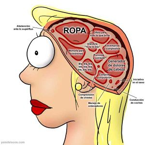

Mujer
 De: La Frikipedia, la enciclopedia extremadamente seria.
De: La Frikipedia, la enciclopedia extremadamente seria.

|
Hay frikipedistas que creen que este artículo debería ser fusionado con Chica.
|
| De la serie Elementos químicos:
|
|
|
| Nombre oficial:
|
Mujer, Símbolo: μ (muu)
|
| Otros nombres:
|
Guoman, Chica, Nena, Churri, Morra, Vieja, jessi
|
| Serie alquímica:
|
Las hay de todas las clases, normales y fuera de serie
|
| Descubridor:
|
Adán
|
| Color en tabla:
|
Rubias, morenas, pelirrojas
|
| Presente en:
|
Cantidades abundantes en todas las áreas urbanas y rurales
|
| Usos:
|
Disfrute y ornamentación. Membrana protectora del feto durante el embarazo. Páginas Pr0n
|
| Estado:
|
Las hay en todos los estados, desde muy buenas, otras no tanto, y otras nada. Pero rara vez se encuentra en estado virgen
|
| Peso kg/puñao:
|
Aceptada en 53.6 kg. pero varia entre 40 y 150 kg
|
| Estructura:
|
Perfume de 15 a 13 unidades, maquillaje (no específico aumenta según la edad), Cuero (de varios cortes y tallas) el mas deseado muy escaso o no disponible dependiendo el país y región
|
| Abstracción:
|
Abstractas hasta más no poder
|
| Humungoso:
|
Dependiendo por dónde las veas...
|
«¡La mujer, ese gran desconocío!»
~ Pablo Motos en una de sus "grandes ocurrencias"
«Tengo una de esas en casa, ¡es mejor que un perro!»
~ IP anónima sobre las mujeres
Una mujer es un individuo de la raza humana que, al contrario del hombre, tiene un origen desconocido y ampliamente discutido: mientras que se sabe que el sexo masculino[1] desciende del mico[2], el sexo femenino evolucionó a partir de diversas especies, de ahí su extrema complejidad.
Filosofía femenina

algunas son tan raras como esta..
- A medida que las mujeres envejecen, ganan más peso. Esto pasa porque acumulamos mucha información en relación a restoranes y tipos de comida en nuestro estómago tanto como en nuestra cabeza. Pero llega un punto en que tanta información no cabe en nuestra cabecita , así que esta se distribuye por todo el cuerpo (especialmente en la barriga y trasero...)... ahora lo entiendo todo ¡No estas gorda! ¡no estás pasada de kilos! ¡¡¡somos cultas!!! ¡¡muy cultas!!.
- Sí señor, somos perfectas porque...
- No nos quedamos calvas (pero gastan un monton en tinte y se arrugan como pasas)
- Tenemos un día nacional y otro internacional (Y los otros 363 días son del Hombre)
- Podemos usar tanto el color azul como el rosa (pero como acumulan tanta "información" en la barriga no les queda bien)
- Siempre sabemos que nuestro hijo es nuestro (y por lo mismo tienen que criarlos solas)
- No pagamos la cuenta.. (pero luego la pagas, y con creces, en la cama)
- Tenemos prioridad en los naufragios (porque no pueden salvarse solas, ya que son criaturas inferiores)
- Somos los primeros rehenes en ser liberados (mismo caso que arriba, aunque en el 98% de los casos es por que las han violado tantas veces que se han quedado sin semen)
- Si somos traicionadas, somos víctimas (y se ponen a llorar todo el día)
- Porque no nos miran mal si lo hacemos porque lo único que inspiran es lástima
- Si traicionamos, ellos son los cornudos (pero ellas son las perras, zorras, putas, y demás epítetos afines)
- Podemos dormir con una amiga sin ser llamadas homosexuales (ya, pero a nuestra imaginación queda el pensar qué habréis hecho, jajaja)
- Podemos hacer mas de una cosa a la vez (cocinar, lavar, limpiar, coger)
- La esposa del presidente es la Primera Dama, el esposo de la presidenta, ¿quién es?(¿Cuántas mujeres presidentas hay?)
- La esposa del embajador es embajadora, el esposo de la embajadora, ¿quién es? (Se llama Antonio y se siente genial por no tener que trabajar)
- Si decidimos hacer trabajos de hombres somos pioneras (porque son muy débiles para hacerlos)
- Si un hombre decide hacer trabajos femeninos es maricón.(porque efectivamente lo es, gran descubrimiento)
- Si sales a cenar con un hombre y después del postre vas al baño, al volver la cena estará pagada. (A menos que el hombre se haya marchado y tenga que pagarlo ella)
- En caso de siniestro, siempre las damas primero. (Y las putas tambien)
- Tenemos el privilegio de cambiar de opinión... a cada instante. (Eso.. lo tenemos todos)
- No tener que haber terminado la escuela, para poder ser secretaria ejecutiva. (véase Frikilibro:Guía frikipedista para ser puta)
- No somos como los hombres, que se parecen a los espermas... de un millón sólo sirve uno (de un millón no sirve ninguna).
- Puedes conocer gente interesante en las colas del water (a otras mujeres con incontinencia, súmmum de la sociedad actual)
- Puedes fingir múltiples orgasmos (pero no tenerlos de verdad)
- Si no quieres trabajar, te mantiene tu marido.(Pero tienen para lavar, cocinar, planchar y follar)
- La esperanza de vida es más larga. (Para pasarla lavando, cocinando, planchando y follando)(¿para qué?...aburridas) (Además de hacer continuamente dieta y no disfrutar de la vida)
- Le puedes dar besos a tus amigas sin tener que preguntarte qué pensaran (y mejor que no sepáis que pensamos).
- Tus órganos sexuales no te controlan. (Pero los de ellos, sí)
- No te tienes que afeitar todos los días. (¿Eso no incluye a las piernas, los brazos, el coño, etc?)
- No sudas tanto. (Si hicieran lo mismo que los hombres, sudarían igual)
- Te dejan pasar primero y te abren la puerta. (Las damas primero, y yo detrás viendo traseros)
- Si tienes calor puedes usar falda. (Menos ropa que eso no)
- No te tienes que poner corbata para ir a trabajar.(Porque se les puede atorar en la lavadora o la aspiradora)
- Si tienes ganas de mear te puedes aguantar '(tienes que, porque siempre hay un colón del diablo para entrar al baño).
- No tienes que mentirle a un chico que no te gusta (pero el chico solo miente porque tiene a otra mejor, y a vosotras los buenos no se os ofrecen).
- Si llegas tarde del trabajo no te preguntan el porqué. (Porque puede llegar a ser deducible viendo el estado en el que has llegado)
- No tienes que preocuparte por la calva. (Te preocupas más por la apariencia externa, y por las arrugas)(la calva no es parte de la apariencia externa, y los hombres no tienen arrugas)
- Con los tacones puedes ser tan alta como quieras. (Sólo alguien que no se cree alto los usaría)
- No pierdes amigas porque son maricas (Te las follas).
- Si no tienes auto sigues siendo persona. (Si no tienes móvil eres inadaptada)
- Descansas sin culpas (cuando despiertas, ahí las tienes)
- Te puedes dejar el pelo largo o corto.(Pero si se lo dejan muy corto las tachan de lesbianas)
- No te tienes que emborrachar para divertirte. (no necesitan alcohol para ser tontas)
- Si eres pequeña no pasa nada (al revés: si eres alta, es cuando pasa. Si no... ¿cómo la chupas?).
- Te puedes poner ropa de hombre (Pero no salir al público porque eres el centro de risas).
- Puedes ser solidaria. (Cualquiera puede serlo)
- Si no tienes camisa de marca no pasa nada. (¿En los hombres pasa algo?)
- Los chocolates superan al hombre. (de hecho cualquier cosa lo hace...aja...ilusas)(ese es un pretexto que usan las vírgenes)
- No somos cobardes. (no intenten imaginar a un hombre pariendo a un hijo, que no soportaría ni 3 meses de embarazo)(ni a una mujer trabajando más de 3 meses...con jefe gritón)
- En el colegio la culpa siempre es de los chicos (y las putas siempre son las chicas)
- No tienes que preguntarte si tu pareja tuvo o no orgasmo. (Porque es obvio) (Muchas veces tienen la "respuesta" en su cara)
- No tienes caspa en la chaqueta. Porque usan litros de Shampoo para caspa
- No tienes que competir por sexo con tus amigas. (Pero de igual forma saben competir por el mejor cuerpo y se lían a madrazos por la mejor polla)
- Tus hijos no te tienen miedo. (Porque confían en ti y no los golpeas por "instinto"...pa que se eduquen cabrones!!!)
- Sabemos bailar. (los hombres con suerte saben caminar)(Por eso nos sentamos, nos relajamos y dejamos que nos hagan un privado...es su trabajo)
- Recibir al lechero, mecánico, diariero, y... otros servicios más. (...bien que les partimos su madre)
- Si estás en el Titanic te salvas. El Titanic ya se hundió, mongólica
- No tienes tendinitis por jugar al fútbol.(La tenéis por correr en las rebajas)(y por usar tacones)
- No te tienes que fijar en el precio cada vez que pides. (Si tienen poco dinero, no)(igual paga de "OTRAS FORMAS")
- Te enteras de todo antes que él. (Se juntan en grupos para hablar sobre los últimos chismes, típico)
- Puedes hacer una maleta grande, total te la lleva él. (Solo si te quiere follar, y todos sabemos que lo hará)
- No tienes que conducir como Fórmula 1. (No puedes, así como tampoco puedes estacionar)
- Si te casas y te separas, ¡¡50% para ti!! (maldita zorra merecida)
- La mayoría de las mujeres son heterosexuales. (Es lo natural)
- El autobús siempre se para por ti. (Si llevas puesta falda... y si es conductora, se olvida del freno y pasa de largo)
- Con la excusa de la "indisposición femenina" todo es permisible.(También por eso no os contratan)
- Llevas la mejor relación con tus padres.(Porque siempre los necesitan)
- Si eres desocupada es menos traumático. (lo traumático es pedir dinero prestado después)
- No pierdes el tiempo tratando de ganar campeonatos de fútbol que no existen. (Pero si pierdes el tiempo en ir a comprar ropa y/o maquillaje)
- Si vas a bailar, puedes bailar con tus amigas.(Luego las embriagas y van a follar)(Pues supongo que despues de varios años de trabajar en el Table Dance todas se vuelven amigas, no...)
- Aunque tengas 10 hermanos siempre eres la mimada de la familia. (Si un hombre no es soportable, obviamente te prefieren si son 10)(Las crían para lavar, planchar, cocinar y follar)
- Si te quedas embarazada la culpa es de él.(Y CRIAS AL HIJO SOLA, JODER!)(y las putas son ustedes, admítanlo)
- De cada 5 cárceles, ¡¡4 son para hombres!! (Eso quiere decir que las mujeres no son 100% inocentes como se creía)
- Somos más comprensivas. (Hasta que empiezan a gritar)
- No te mueres de la envidia si una amiga progresa. (Pero te sientes impotente)
- Entre un ladrón hombre y mujer, el sospechoso es el hombre.(y la culpable la mujer)
- No dices tonterías cuando estás con alguien que te gusta (claaaaaaro... y mi abuela es virgen)
- Tienes más variedad de ropa que el hombre. (Un hombre con mucha ropa es un marica)(mas ropa de la que usan y/o necesitan)
- Si te pega, es un hijo de puta (¿hijo de que puta?). Si le pegas tú, es en defensa propia (jaja). (Si pero si te pega él casi te mata si le pegas tú ni le haces un arañazo)
- No te tienes que hacer tratamientos por impotencia. (pero sí por la tetas caídas)
- No roncas cuando duermes. (Muchas sí roncan, inclusive más fuerte que los hombres)(...y mi abuela es virgen)
- Puedes mirar a un hombre sin pensar en sexo. (Pero le miras su peinado, su ropa, sus zapatillas, y por encima de los pantalones para saber cúan larga la tiene... muy superficial)(pero miran a Justin Bieber y se exitan... ¿eso es ser heterosexual?
- Podemos "mirar" con disimulo. (Qué será lo que miran...)(nosotros no necesitamos disimular)
- No tienes que llamarlo para ver cuándo puede salir contigo. (¿Para qué llamarlo a salir, si la diversion está en la cama?)
- Si no puedes tener hijos, el que "no puede" es él (pero sospechosamente tu mejor amiga se queda embarazada de TU marido jajaja)
- No tienes que aprenderte la tabla de posiciones, que cambia semanalmente.(Pero sí la ropa de moda que cambia cada minuto)
- Una mujer linda, es una diosa; un hombre lindo es un puto.(Mas bien es al revés)
- No tienes que pagar para estar con alguien.(PORQUE LES PAGAN A USTEDES)
- Si estás blanca te puedes maquillar.(y parecer una puerta)
- Si se te pincha el neumático en la calle, se para un hombre y se encarga, mientras tú esperas en el auto escuchando música (porque se necesitaría un pelotón de mujeres para cambiar uno solo)
- No te importa si tu marido gana más que tú.(al final el 89% va para ropa)
- Puedes llorar tranquila sin que se burlen de ti. (Te toman como llorona, a ellos como maricas, además de que le temen a los sentimientos...es para sobrevivir...en un mundo de hombres (que es de hombres y no de mujeres) la supervivencia es del más fuerte)
- Si vas a bailar, las damas obtienen descuento o pasan gratis. (Porque es una forma de hacer que se emborrachen y así atraer más hombres)(Claro que me las descuento y además "las pasan" gratis...qué rico)(...Y claro que pasan gratis es de lo que trabajan...muévelo, muévelo)
- No tienes que fanfarronear con los chicos con los que sales. (Pero charlan sobre sus relaciones)
- Puedes destituir a un presidente por "acoso sexual".(pero te consideran zorra)
- De cada 1.000 personas ejecutadas en la silla eléctrica, 1 es mujer. (Y eso a quién le importa?)
- Puedes admitir que te equivocaste sin herir tu ego.(porque ya están acostumbradas a equivocarse)(pero al final el ego (falso) es lo único que tienen)
- Mujeres se prostituyen con hombres; hombres se prostituyen con hombres.;mujeres se prostitiyen con mujeres)
- No hay que andar acomodándose el paquete.(pero se operan las tetas)
- Si te quieres cruzar de piernas nadie se burla. (pero todo el mundo se pregunta a qué hora las abres)
- Puedes hablar y gesticular libremente (Y los hombres no podemos porque...)
- No hay que andar apuntando cuando se mea. (Porque no mean paradas)
- Las mujeres homosexuales no se notan. Los hombres homosexuales dan vergüenza ajena. (depende, solo si son locas)
- La edad jubilatoria de las mujeres es anterior a la de los hombres (a pesar de vivir más tiempo). (Porque tienen menos energía y fuerza que los hombres) (Y porque cuando estan viejas nadie las quiere)'(Y al estar en la menopausia te rompen las pelotas)(Esta es otra causa de que sean menos contratadas)"
- Las mujeres tienen más intuición. (Para la ropa y las pollas)"
- No tienen que ir a las guerras. (Y se quedan solas)(porque son cobardes)(En la sociedad que vivimos los hombres tampoco)
- Te puedes cambiar el color de pelo sin tener que ser jugador de fútbol. (Quién no)
- Sabemos mentir mejor que los hombres. (Y luego nadie les confía nada)
- Puedes llevar más que la billetera en la cartera. (¿Y desde cuándo necesitamos los hombres llevar a mano un set de maquillaje?)
- No somos parte de la mafia policial.(Son parte de las putas)
- No hay que sacar los músculos para las fotos. (Hay que sacar el culoy las tetas )
- Si tienes frío le sacas el abrigo al hombre, y ¡que se joda! (total terminará follándote))
- No te tienes que preocupar por el "tamaño". (... y los implantes de culo y de tetas?)
- Sabemos escuchar. (El 99,8 de la raza humana lo hace)
- No nos crecen pelos en la nariz con la vejez.( no, los teneis toda la vida)(pero no nos llegan para hacer trencitas...pero bien que les crece bigote XD)
- Te has leído todo esto (Vaya friki que estás hecho)(Y a mucha honra, para algo soy frikipedista)
 Cerebro de una mujer normal
Digievoluciones
Espécimen 1
Cotorra mollejuda del Afganistán digievoluciona a "mujer". A diferencia del hombre que valen un par de tetas con tal de follar(tiene sus preferencias pero con tal de mojar le vale de todo), este especimen llamado "mujer" suelen ser estrechas en un 99%. Esta especie suele ser conocida como "maruja", se da mayoritariamente en regiones del sur peninsular . Es un ser cruel que despelleja sin contemplaciones y de forma verbal a sus contrincantes, ya sean de otra especie, o bien de forma caníbal, a sus propias congéneres. Su morfología se diferencia de otras especies de mujeres por su mayor tamaño (a lo ancho), pelo teñido de rubio o caoba recogido, a modo de cresta, con unos extraños tubos tribales conocidos como "rulos" o "chichos", por vestir batas acolchadas (en color azul o rosa) denominadas "boatiné" y por quejarse sistemáticamente de:
- el marido
- la nuera
- lo caros que vende los tomates el del colmado.
Hábitat: puerta de la casa, puerta de la casa de la vecina, ventana del patio, peluquería, colmado, súper y tiendas de Todo a cien (época de navidades).
Ejemplo: en su hábitat natural la señá Antonia (Los Morancos); en camuflaje, María Teresa Campos (suprema maruja entre las marujas)
Espécimen 2
Zorra común digievoluciona a "mujer". Esta otra variante suele ser conocida como "pendón" o "petarda" o, en nombre técnico, "Lumis putonae". Abundan en zonas desarrolladas de las grandes ciudades, sobre todo industrializadas en el sector Servicios: Televisión y entretenimiento (y en la Casa de Campo), aunque todas son inmigrantes de zonas subdesarrolladas, de escasa cultura y donde el buen gusto y las buenas costumbres son lo único que brillan (por su ausencia). Estos seres viven completamente dominados por el macho, y a su vez, dominan a otros machos de mayor edad. Son ejemplares artificialmente llamativos, con una voz que puede llegar a superar en decibelios y barbarie de contenidos a los de las "Marus". Suelen exhibir poca ropa y mucha lengua (viperina). Se las encuentra en su salsa en:
- discotecas y saraos de famoseo, donde normalmente se cuelan (previa mamada al maitre o portero de discoteca).
- Platós de televisión de programas de tirarse las butacas a la cabeza y arrancarse la piel a tiras (ante las cámaras) y firmas posados, posado-robados, exclusivas, montajes y demás (detrás de las cámaras).
- cuando no están en época de celo: en Casa de Campo, alrededores del Camp Nou, prostíbulos de lujo, clínicas de cirugía estética y tiendas de moda outlet.
- Ademas tienen el labio derecho mas grande que el izquierdo se puede decir que la mujer es obsesiva y compulsiva y viceversa al igual que los castores embarazados en Yugoslavia (según las investigaciones realizadas en mayo de 2007 por Beno Ardi-Bellin).
fáciles de amansar utilizando reggetón, dinero, licor y coches finos
Ejemplar: Nuria Bermúdez, Tinky Winky y las chicas de S.H.E.
Espécimen 3
Mujer "maltratada y mantenida". Parásito social y casquivano que aprovecha conflictos reales para hacerlos propios y vivir a costa del animal parasitado (marido, ex marido, ex novio). Abundan en grandes ciudades marcadas por la tragedia de casos de malos tratos por parte del sector masculino evolucionado a partir del primate menos dotado de sesera de toda la rama "míquica" (el Pichaflujus orangutanis). Suelen ser mujeres con dos o tres hijos y con un rollete con el butanero (sector masculino evolucionado del "Buitrus micolensis"), un piso con la hipoteca pagada o casi pagada, posible vagancia crónica y un marido explotao en el curro con pinta de gigantón peligroso pero más bueno que el pan. Suelen ser mujeres dominantes expertas en el arte de fingir heridas, golpes, moratones, escoriaciones, cortes y demás carne de traumatólogo. Tienen grabado en la memoria lo siguiente:
- Nombres de juezas sexistas (hembristas)
- Dirección del Juzgado especial para la violencia de género más cercano.
- Número de la Unidad de la Policía, delitos contra la violencia doméstica.
Lejos de su imagen de aparente vulnerabilidad y debilidad,se esconde una tía con más picores que una perra, más mala leche que la de la Vaca que Ríe (¿por qué se ríe la hijaputa ésta?) y peor idea que Hitler con una bomba atómica.
Ejemplo: Parricida de Santomera.
Espécimen 4
Diablo de Tasmania digievoluciona a "mujer": crías deformes, adolescencia. También conocidas como "SHuLAsh", "niñatas" y "PrImAh" ( véase Jessis ). Suelen poblar páginas de internet dedicadas a conocer gente, aunque en lugar de ello, utilizan dichas páginas para exhibirse en plan catálogo para pederastas, temporada "otoño-invierno 2005 (por el culo se la hinco)", discotecas para menores de edad corruptos, platós de televisión de testimonios (como público, normalmente), plazas y parques de las ciudades, baretos cutres y colegios e institutos (a este paso, correccionales, guarderías y prostíbulos). Suelen ser hijas de los engendros anteriormente citados, con escasa cultura, escaso vocabulario y que forman parte de una tribu con dialecto propio que se diferencia del resto de crías de mujeres en tres puntos:
- lenguaje violento, lleno de referencias a drogas, peleas y sexo insano, inmaduro e inmoral.
- carencias afectivas patentes, buscan ese aprecio entres sus colegas: el que más insulte a los enemigos del otro, más colega es.
- exultante engreimiento, parafilias autoeróticas, delirium tremens, obsesión con el físico, exhibicionismo. Ególatras y envidiosas.
Su relación con padres y hermanos/as humanos normales es de parasitismo extremo: vagancia, gandulería, robos, aprovechamiento.
Ejemplos: Belén Esteban es el paradigma de esta especie, aunque su continua regresión infantil es el caso más preocupante, pues a su edad sigue estancada en la adolescencia de las crías subdesarrolladas que conforman esta especie. Otro ejemplo, más grave que el anterior, es Ana Obregón.
Espécimen 5
Hormiga atómica digievoluciona a mujer alterada. Recogida por los comics de Maitena,
solo tienen que preocuparse de ascender profesionalmente, llevar la economía de la casa y mantenera limpia, cuidad de los niños y de su inmaduro marido, y por supuesto, en tacones altos, sin despainarse y siempre bien maquillada.
Debido a todo esto, es un espécimen idolatrado por sus hijos, al la cual es a la única a la que piden permiso y rinden cuentas. El 99% de los casos ganan mas que su marido, lo que causa la envidia de otros hombres y hace mas dificil aun su existencia.
Ejemplos: cualquier mujer con ciertos ovarios para pasarse por el forro todas las dificultades impuestas por la historia.
Tipos Generales
Mujer soltera y parte de las casadas
Dícese del único representante del género femenino que, a diferencia de las demás congéneres, ha evolucionado de una sola especie y que cohabita en (casi) perfecta armonía con el hombre, se entiende con él y no parece demasiado insoportable. Eso sí, es enemiga acérrima de los otros subgrupos de mujeres. Habitan en juzgados, universidades, trabajos honrados y honestos y suelen ir acompañadas de por vida por un solo macho de su misma especie.
Ejemplos: pocas y muy solicitadas, entre ellas Margarita Landi (difunta), Lady Diana (siempre se van las mejores) y La Pasionaria. Se cree que evolucionó de la víbora por su capacidad de defensa y porque para huir de un dios machista en un paraíso para el hombre a costa de la mujer, que les prohibía hasta follar, utilizó a una serpiente.
Ex-esposa
Proviene de la víbora cornuda, aunque el único que lleva cuernos en su nido es el marido. Este espécimen, variación del espécimen "maltratado", evolucionó a raíz del veneno, mala idea y peor intención y capacidad de asfixiar a sus víctimas en las de mayor tamaño. Son mujeres con maridos acaudalados, pocos hijos, movidas sólo por el interés del dinero. Normalmente, expetardas (ver mujer "putón"), que pillan a un millonetis que abandona a la mujer por ellas, les lega todos sus bienes, y en cuanto se cansan de él le dan puerta quedándose con todo el dinero, casas, coches y hasta con el corazón de él. Estas mujeres se pueden encontrar en:
- ex casas, ex coches y ex yates del ex marido.
- ex empresas, ex apartamentos de vacaciones y ex clubs privados del ex marido.
- en los bancos, peluquerías, estheticienes, clínicas de cirugía estética (como buena ex petarda venida a más, el ladrón siempre vuelve a la escena del crimen), tiendas de artículos de lujo y El Corte Inglés (segunda vivienda).
Normalmente, sus profesiones anteriores eran secretaria, modelo, puta de lujo y enfermeras de clínicas privadas.
La Gamba
si esto te provoca, visita un psicologo...
Una gamba es una subespecia de la hembra humana. De la misma manera que el Grifo o el Centauro, se compone de dos mitades. Dejando de lado las comparaciones mitologicas, se trata de una mujer que tiene una cara más fea que el hambre en Africa pero un cuerpazo que nada más verlo te corres de manera que ni aunque tu novia accediera al Griego. La metáfora viene de la gamba; que sirve todo menos la cabeza.
Afortunadamente para la gamba, aunque la cara y los ojos son el espejo del alma, por lo general los hombres son unos perros superficiales asi que al contrario que las gordas (que no las queremos a menos que tengamos 2 botellas de ron encima y la certeza de que ningun conocido se va a enterar), una gamba con su cuerpazo es un objeto altamente codiciado por ellos. Hasta les da cierto morbo tirarse un híbrido.
Si consigues copular con una gamba, aunque tenga la cara más fea que la de un Perro Pug aplastado por un tanque y cagado encima, todos tus amigos te darán palmaditas en la espalda con envidia cochina reprimida. Otra ventaja es que las probabilidades de volverte un calzonazo pagafantas son aproximadamente 10% menores que con un pivón al 100%, y además años de mirarse al espejo y ver la discordancia entre su cara y su cuerpo la habrán llenado de complejos e inquietudes dificilmente superables. Estos impediran que se le suban los humos y se vuelva creidilla.
Asi que no hay que olvidar que la gamba es plenamente consciente de su condición y que no hay que tratar de darles cumplidos falsos sobre lo bello que es su rostro con segundas intenciones. La honestidad siempre debe ir por delante. Si esta buena, pero quieres taparle la cara con una bolsa del carrefour, te callas eso último pero le mencionas que tu posición favorita es el 4 patas y el chica arriba con la espalda hacia ti porque piensas que es muy sexy vista desde esos ángulos. Cuándo te pregunta que porque no la besas, le dices que tienes herpes labial. Si eres una chica leyendo esto y te estas preguntando si eres una gamba, lo más probable es que no- eres un callo a secas.
Perfecta mujer nacional

Modos femeninos: Damas resolviendo malentendido
- COMPLACIENTE: Es un imperdonable error la negación al esposo del débito conyugal. La mujer no debe, bajo ningún pretexto, negar a su marido lo que le pertenece. Muchas mujeres que se lamentan de las infidelidades de sus esposos no quieren darse cuenta de que fueron ellas las culpables de la traición por no haber conocido a tiempo la enorme trascendencia del consejo que antecede.
- COCINERA: Que las comidas estén dispuestas a tiempo, a la hora que el señor las ha pedido. Puede tener un cita de negocios, una reunión. Si no hay nada preparado a la vuelta, ya se comprende su descontento, su impaciencia. De ahí a las escenas no hay más que un paso que pronto se franquea. Trata de cocinar bien. Los buenos maridos tienen fama de buen apetito. En todo caso, si todas las noches hay charcutería, y cada dos o tres días el mismo menú estereotipado, su humor se resentirá.
- FEMENINA: El hombre busca en la mujer precisamante las cualidades que él por su naturaleza no posee. Busca femineidad, dulzura, delicadeza. Mujer-hombre, no la quiere. Para hombre se basta él. Cuando pedimos café, queremos que se nos sirva café puro, sin mixtificaciones, es decir, café-café. Esas chicas que con sus modales recuerdan a casi un hombre, llamarán tal vez la atención, arrancarán algún piropo a los tontos y a los frescos, pero al chico recto y bien formado eso no le gusta.
- MATERNAL: El organismo de las mujeres está puesto al servicio de una matriz; el organismo del hombre se dispone para el servicio de un cerebro.
- GIMNÁSTICA: Una mujer que tenga que atender a las faenas domésticas con toda regularidad tiene ocasión de hacer tanta gimnasia como no hará nunca, verdaderamente, si trabajase fuera de su casa. Solamante la limpieza y abrillantado de los pavimentos constituye un ejemplo eficacísimo, y si se piensa en los movimientos que son necesarios para quitar el polvo de los sitios altos, limpiar los cristales, sacudir los trajes, se darán cuenta de que se realizan tantos movimientos de cultura física que, aun cuando no tienen como finalidad la estética del cuerpo, son igualmente eficacísimos precisamente para este fin.
- BAILARINA: En cierta edad, ya no muy pequeñas, adivinan que su ansia de maternidad -porque toda mujer ha nacido para ser madre- no puede realizarse sino con la cooperación del varón. Por eso sienten necesidad de relacionarse con el otro sexo. Y ¿dónde mejor que en el baile?. El joven la solicita y ella -la dama- se siente complacida entregándose a él.
- DIVERTIDA: Los primeros juguetes de las niñas han de ser las muñecas o cosas parecidas, en conformidad con sus fines ulteriores. Por donde se lleve el agua, por allí corre; y el agua es la conciencia de las niñas en sus primeros años; que corra por sus cauces propios y femeninos.
- SUMISA: La mujer es la que tiene que llevar la iniciativa en esta táctica del ceder. Constitucionalmente presenta menos dificultad física y psicológicamente de ordinario Dios la ha dotado de una inmensa capacidad de aguante. Después, el hombre, conseguida esa victoria o seudovictoria inicial, más fácilmente cede y aun se da por derrotado. La discreta dulzura femenina puede completar brillantemente la victoria, pero sin la humillación del hombre.
- CORRECTA: La actitud íntima de la especie humana es la posición horizontal, es decir, aquélla en que el hombre se sitúa delicadamente sobre la mujer (…). La posición vertical, o sea, de pie, no puede ser más peligrosa, pues expone al hombre a graves accidentes, por ejemplo, a la parálisis de las piernas. Y cuando la mujer ocupa el sitio de su marido el acto conyugal no se cumple como debiera.
- DISCRETA: Si por casualidad vuestro marido sale alguna vez y, por casualidad, está a punto de cerrar la puerta sin deciros adónde se va, no os creáis autorizadas a exigirle que os diga lo que va ha hacer.
- LISTA: No haga la mujer gala de sus conocimientos si es que posee una formación intelectual mejor que la del esposo. Al hombre le gusta sentirse siempre superior a la mujer que ha elegido como compañera
En resumen, los hombres buscan una mujer que en casa sea como una asistenta, en las fiestas una señora y en la cama como una puta... y acaban encontrando una que es una señora en casa, una asistenta en la cama y una puta en las fiestas!!!!!!!!!!
Diferencias fundamentales entre el hombre y la mujer
- La mujer distingue más colores del espectro visible que el hombre. Por ejemplo, donde la mujer ve los colores "hueso", "roto", "crudo" y "marfil", el hombre sólo distingue uno: el blanco.
- A pesar de esa habilidad para distinguir colores, la percepción espacial de la mujer es sensiblemente inferior, lo que le causa problemas, por ejemplo, al estacionar un vehículo en línea.
- A la mujer los mecánicos nunca le dicen la verdad.
- La mujer pregunta si se pierde. Curiosamente, el hombre prefiere vagar sin rumbo durante horas.
- La mente de la mujer es multitarea, lo que significa que puede mantener una conversación mientras con una mano cambia el pañal al bebé y con otra escribe en el ordenador, no por ello deben pensar que realice las tareas bien(no se puede exigir tanto). El cerebro masculino en cambio es monotarea, por lo que el hombre es incapaz, por ejemplo, de mantener una conversación coherente mientras hay un partido de fútbol en televisión o un buen escote delante.
- Sin embargo, a pesar de esta mente multitarea, la mujer es incapaz de comprender algunos conceptos sencillos para el hombre, como el fuera de juego.
- Por alguna razón que se le escapaba al mismísimo Freud, cuando la mujer dice "sí" piensa "no", y viceversa. Aunque a veces sucede exactamente lo opuesto, lo ortogonal o lo paralelo.
- Es la única portadora de la extraña enfermedad del Enfriamiento global
- El hombre tiene rabietas, la mujer escudriña en el interior de su cerebro para preparar el mayor plan de venganza posible mientras se hace la víctima
- Cuando una mujer dice que "todos los hombres son unos cabrones" es un acto
gilipollas, progresista, igualitario, de mujer liberada, de orgullosa y admirable luchadora que sabe lo que quiere. Si un hombre dice que "todas son unas putas" es un machista, maltratador y misógino al que hay que capar y posteriormente quemar por ser un troglodita.
- Cuando una mujer tiene hijos siendo soltera no atrae a los hombres de forma seria incluso los repele, pero en cambio cuando un hombre tiene hijos siendo soltero atrae a las mujeres y estas enloquecen por él.
- Cuando una mujer tiene la menstruación el hombre tiene que aguantar su mal humor y el no tener sexo en cambio cuando un hombre tiene que afeitarse ellas no le ponen la espuma.
- En los pasapalabras, ellas son siempre las "cultas e inteligentes" mientras los hombres somos los "pijos alelados" y los "cheguevaras borregos"
- Los hombres tienen que cuidar su entrepierna por que ahí esta su cerebro, en cambio las mujeres no tienen problema de ello, lo llevan en su barriga.
- Los hombres existen gracias a DIOS, ellas... existen gracias al gran y generoso hombre!
- Si un hombre tiene muchas mujeres es el mejor, un capo, un habilidoso. Si una mujer está con muchos hombres, es una puta.
Costumbres y hábitat
- Las mujeres suelen condenar el fútbol como un deporte estúpido de varias decenas de tíos sudorosos corriendo tras una pelota, pero curiosamente ellas son seguidoras de unos deportes un tanto extraños que consisten en hacer el ridículo públicamente. Algunos de estos deportes son Gran Hermano, Operación Triunfo y Aquí Hay Tomate.
- Curiosamente el concepto de la igualdad para las mujeres es que la violencia hacia ellas por parte del hombre sea delito y viceversa sea falta. Que en caso de divorcio con hijos menores, sea cual fuere la causa, ellas se queden con la mayoría de los bienes matrimoniales y el marido deba pagarle una pensión y que este la de las gracias por no denunciarle por malos tratos de aquella vez que la grito cuando estaba en el baño. Se supone que se debe a una ausencia del gen de la moralidad pero aún no se ha demostrado.
- Las mujeres suelen ser de costumbres gregarias externamente, pero internamente son sedentarias y odian a sus amigas y sólo esperan que aparezca un Brad Pitt o un George Clooney que las haga felices (si no aparece el mundo es machista y nadie la comprende buaaa), van en manada pero se hacen la puñeta entre ellas por asuntos de chicos e incluso de ropa o de amigas populares.
- Cuando se trata de defender y/o ampliar el bastión femenino se hacen una piña con gritos de "nosotras parimos nosotras decidimos". Inventan escusas ridículas para ampliar ya su enorme fortaleza femenina llamada "Lo Políticamente Correcto" como que cobran menos o las pegan los hombres y así consiguen beneficios como subvenciones, discriminación positiva, etcétera.
- Les gusta lucir su cuerpo, cuanto mas mejor pero sin pasarse para evitar que las llamen guarras o algo peor, pero curiosamente luego se quejan de que los hombres se fijen en aquello que lucen, se cree que ellas piensan que la inteligencia se mide por la talla de sujetador. Están obsesionadas con la belleza, pero no quieren que los hombres se fijen solo en ella, se cree que las mujeres aun no han descubierto que con los hombres se puede conversar y compartir hobbies en vez de ser unas pasivas aburridas.
- Cuando los hombres tienen un problema la culpa es de ellos mismos, cuando la mujer tiene un problema busca la forma de culpar al hombre.
- Su concepto de trabajo duro es estar 8 o 9 horas de lunes a viernes en una oficina con calefacción en invierno y aire acondicionado en verano en compañía de compañeras que suelen ser más guapas que ella, más exitosas y que por ello la hacen sentirse inferior y mal consigo misma y pillan una depresión que luego pagan con el marido o novio (recordemos que la culpa de sus problemas es siempre del hombre).
- Cuando la mujer busca pareja sale a pescar ya que es un acto pasivo de ponerse guapa para bailar en corro con algunas amigas bebiendo malibus con piña y esperar que se les acerquen los chicos. Aquellos que no cumplan sus expectativas serán rechazados enérgicamente ya que la culpa es de ellos por no ser ricos y/o guapos (la culpa es siempre del hombre). En cambio el hombre sale a cazar ya que es un acto activo.
- Las mujeres (aunque ustedes no lo crean) se comienzan a masturbar cuando aprenden a ir solas al baño (al rededor de los 7 años, pero tienen un consenso para decir que comenzaron a los 22 y así dejar al hombre en vergüenza).
- Además las mujeres se dividen en 3 partes: las que se limpian el ano de atrás para adelante, las que lo hacen de adelante hacia atrás y las que simple y llanamente no lo hacen. Esta subdivision tambien puede degenerar en las que están buenas, las que son inteligentes y la inmensa mayoria
- La funcion de la mujer es la de hacer las tareas domesticas, tanto como lavar la ropa, los pisos para que el hombre no las haga. es decir en resumen la mujer es la esclava del hombre, tanto en el ambito s e x u a l como en en el ambito en el que el hombre no quiere hacerolo
Como seducir

Esta mujer no necesita ningún truco para seducir
- Lo mas importante es tener la vista "ojo de águila" conocida por los romanos como oculus/ güila que consiste en la mirada fija en nuestro objetivo a desear o "mujer", es importante percatarse de que la vista este siempre en los ojos, evitando verle el trasero, busto y otras partes, con miradas leves y retirando constantemente la mirada.
- El acercamiento es lo más importante de la importancia, que debe ser cuidadoso mostrando la mayor seguridad posible y dejando atrás miedos y mellos, el romano Vitruvio ya citaba este tipo de encuentros o "Congregaciones" donde el espécimen a cazar se reúne con sus semejantes especímenes o en ocasiones monstruos mejor conocidos como "amigas", si esto sucede es mejor encontrar a la mujer exenta, aunque sea unos segundos, de estos especímenes que pueden especular y destruir nuestro plan, si la conversación funciona sera ideal pedir el mail o teléfono (no hacerlo en estado de ebriedad) ya que escribirá puros garabatos si se esta alcoholizado es preferible pedirle a ella que lo escriba.
- La primera plática debe de ser indiferente mostrando una buena actitud sin sonreír demasiado y tratando de sacar una conversación oculus/ güila no bajar la mirada! (principalmente el busto) las platicas posteriores si hubo interés deben de ser recurrentes a exaltar sus atributos físicos, claro no dividir en partes el cuerpo sino hablar de todo el conjunto resumiéndose a "tú".
Análisis físico químico de la mujer
Propiedades físicas
- Superficie generalmente cubierta de una gruesa capa de pintura.
- Hierve espontáneamente y se congela por razones desconocidas.
- Se derrite si se le da un trato especial.
- Se vuelve amarga si se le utiliza incorrectamente.
- Cede a presión ejercida en los puntos correctos.
- Explota en un frenesí destructivo cuando se ejerce precion en puntos incorrectos.
Propiedades químicas
- Tiene gran afinidad por el oro, la plata y una amplia gama de
óxidos metálicos a altas presiones piedras preciosas.
- Absorbe grandes cantidades de substancias caras.
- Puede explotar espontáneamente sin previo aviso y sin razón conocida.
- Es insoluble en líquidos y su actividad aumenta por saturación en alcohol.
- Es el agente reductor de dinero más poderoso conocido por el hombre.
- Es común que segregue un liquido rojo cada 28 días, lo cual la vuelve mas inestable aún.
Pruebas de laboratorio
- La muestra se torna rosa si se le descubre en su estado natural.
- La muestra se torna verde cuando se compara con otra muestra mejor.
Peligros potenciales
- Es altamente peligrosa, salvo en manos experimentadas.
- Es arriesgado poseer más de una, aunque pueden tenerse varias en distintos lugares.
- Siempre que las muestras no entren en contacto, en cuyo caso es inevitable una violenta explosión.
- Nunca provocarla, podría acarrear consecuencias como arañazos, pellizcos, mordiscos y heridas muy dolorosas.
- El contacto prolongado acaba volviendo al acompañante en un idiota sin pensamientos, alienado y controlado por su cónyuge.
- Al esconder cualquier tarjeta de credito la cara, manos, piernas y garganta se contraen infinitamnente(esto es recomendable solo si se esta a menos de 100 km de distancia de la misma).
Tratamientos conocidos
- Mujeritis aguda: El único tratamiento conocido es el retiro total.
- Mujeritis crónica: En este caso un banco amable, un abogado imaginativo y un juez masculino son tratamientos posibles, pero este tratamiento es inevitablemente lento, doloroso y muy costoso.
Zoología femenina
- Yegua: Mujer que sólo accede al guía para ser puta.
- Zorra: La que te juega por la espalda. Ejemplo: "amiga" que se folla a tu novio. Es junto con la perra, una de las más comunes, estas dos últimas se encuentran en el 40%.
- Gata: Movimientos sensuales y vestidos a lo Agarraoporbandismo a través del cual enganchan a un Señor Millonario y se pokemonizan en unas Señoritas "educadas" y "cultas". Su aparición es del 26.417%.
- Perra: ¡Puede olfatear billeteras hasta a 5 Km. de distancia!, una perra puede variar su configuración electrónica, al variarla se transforma en una calientapollas. Su porcentaje en la Tierra respecto al resto es del 40%.
- Barbie: Dícese de la mujer muy perfecta físicamente pero hueca de adentro que se interesa en cosas materiales, es de fácil convencimiento y atractivo visual pero puede llegar a ser molesta e interesarse únicamente en hombres ricos o Ken de plástico.
- Infantil: Son como niñas, a veces tamaño normal a veces mini si las tratas bien se vuelven sumisas de verdad. En el tamaño mini los globos de la parte de arriba no estan inflados a veces ayuda que se les ayude a inflarlos aunque en el tamaño normal si estan inflados, Si las llevas a parques de atracciones o les compras barbies, globos y demas ganaras puntos.
- Violadas: Te siguen porque no tienen eleccion... Despues de XXX no pueden negarse a hacer lo que quieres, a veces no hace falta que se lo haga uno mismo si no rescatarlas de alguien que se lo haya hecho en casos como este se vuelven sumisos
NOTA: no existe margen de error, el diferencial se debe a que algunos travestimosis. Estas personas son unos héroes, los Travelos, gracias a ellos, a su sacrificio, podemos saber más sobre ese extraño ser llamado: Mujer.
¿Cómo entender a las mujeres?
- Sí = No
- NO = No (Sólo es sí si son ellas las que lo dijeron)
- No te rias = No (Y mas vale que no te rias)
- Tal vez = No
- Voy a pensarlo = No
- Te creo = mentiroso
- Te amo = a tu dinero, tu auto y tu casa
- Te quiero = Ver muerto para quedarme con todas tus cosas
- Tú verás = lo haces y te mato
- Lo siento pero... = Lo volveré a hacer igual...
- Decide tú = ¡Haz lo que yo digo!
- Eres libre de hacer lo que quieras = Ni se te ocurra hacerlo
- Haz lo que quieras = Pero lo pagarás caro
- No, no estoy enfadada = Por supuesto que estoy cabr... ¡IMBÉCIL!
- Te estoy engañando = y tú que crees que es broma si te engaño!!!
- Te estás durmiendo = ¡No te duermas!
- Esta noche estás muy cariñoso = No tengo ganas de hacer el amor, pesado
- No me mires de esa manera = Me encanta que me mires con esa cara de salido...
- ¿Estoy gorda? = Dime que estoy buenísima
- Apaga la luz = Tengo celulitis
- Quiero cambiar las cortinas = Y las alfombras, la pintura, los muebles... y que lo hagas tú
- Es que la cocina es muy pequeña = Quiero una casa nueva
- ¿Me quieres? = Te voy a pedir algo...
- ¿Cuánto me quieres? = Y cuesta mucho dinero
- Necesitaríamos = Yo quiero
- Tenemos que hablar = Necesito quejarme de algo y ya puedes ir cagándote en los pantalones
- Creo que no nos comunicamos lo suficente = Tienes que estar de acuerdo conmigo
- Para ya (a veces añade algo como coño) = No pares, continúa
- ¿De aquí a dónde me quieres? = Lo que to voy a pedir, ni con la tarjeta de crédito lo puedes pagar
- Ya no te quiero = Te engaño con tu hermano
Citas célebres

|
Cualquier cosa que se le da a una mujer, lo transformará en algo mucho más grande.
Si le das esperma, te creará un hijo.
Si le das una casa, te creará un hogar.
Si le das alimentos, te creará una comida.
Si le das una sonrisa, te dará el corazón.
Las mujeres multiplican y amplían cualquier cosa que se les dé.
Por tanto, si le das cualquier porquería,… estate preparado, porque…
seguro que recibirás un montón de mierda.
|

|
|
|
El amor es el estado en que el hombre ve más las cosas como no son. (Friedrich Nietzsche)
Nunca confíes en un animal que sangra más de cinco días y no muere. (Gandhi)
¿Mujer? ¿Qué es eso? (IP anónima)
Hay mujeres que, por mucho que en ellas se busque, no tienen interior, no son más que máscaras. Hay que compadecer al hombre que se abandona a estos seres casi fantasmales, necesariamente incapaces de satisfacer (Friedrich Nietzsche)
Todo idealismo frente a la necesidad es un engaño. (Friedrich Nietzsche)
Si vas con mujeres, no olvides el látigo. (Friedrich Nietzsche)
El verdadero hombre pretende dos cosas: el peligro y el juego. Por eso quiere a la mujer, que es el juguete más peligroso. (Friedrich Nietzsche)
En la venganza, como en el amor, la mujer es más bárbara que el hombre. (Friedrich Nietzsche)
Las mujeres, por ser más débiles, se ven obligadas a depender no de la fuerza, sino de la astucia; de ahí su hipocresía instintiva y su inmodificable tendencia a la mentira. Por eso el fingimiento es connatural a las mujeres y se encuentra tanto en las mujeres tontas como en las inteligentes. (Arthur Schopenhauer)
La experiencia de un hombre es conocimiento y el conocimiento es poder. Y no hay nada que una mujer desee más que el poder, el cual sólo puede ser ejercido a través de un hombre. (Arthur Schopenhauer)
Cuando alguien presume de su mujer amable y del amor que siente por ella, creo ver a un frenético que elogia a una víbora, y que aún dice que es encantadora y que tiene la suerte de ser mordido. (Pierre de Marivaux)
Si la mujer fuera buena, Dios tendría una (Sacha Guitry)
No consiento que la mujer enseñe ni domine al marido, sino que se mantenga en silencio.. (San Pablo)
La mujer es mala. Cada vez que se le presente la ocasión, toda mujer pecará. (Buda)
No les des las llaves de tu coche a una mujer, a no ser que quieras el dinero del seguro...(Xavier Domingo)
Cuando las mujeres nos aman, nos perdona todo, incluso nuestros crímenes; cuando no nos aman, no nos dan crédito de nada, ni siquiera por nuestras virtudes. (Honoré de Balzac)
La gran pregunta que nunca ha sido contestada y a la cual todavía no he podido responder, a pesar de mis treinta años de investigación del alma femenina, es: ¿qué quiere una mujer? (Sigmund Freud)
La más tonta de las mujeres puede manejar a un hombre inteligente, pero es necesario que una mujer sea muy hábil para manejar a un imbécil. (Rudyard Kipling)
Si quieres que te sigan las mujeres, ponte delante. (Francisco de Quevedo y Villegas)
Hay tantas mujeres bellas, pero no hay perfectas. (Victor Hugo)
El primero que comparó a la mujer con una flor, fue un poeta; el segundo un imbécil. (Voltaire)
La mujer es como la sombra: si la huyes, sigue; si la sigues huye. (Chamfort)
La mujer es un vulgar animal del que el hombre se ha formado un ideal demasiado bello. (Gustave Flaubert)
Una mujer sería encantadora si uno pudiera caer en sus brazos sin caer en sus manos. (Ambrose Bierce)
La mujer, sólo el diablo sabe lo que es; yo no lo sé en absoluto. (Fiodor Dostoievski)
Las batallas contra las mujeres son las únicas que se ganan huyendo. (Napoleon Bonaparte)
Cualquiera que diga que puede ver a través de las mujeres se está perdiendo un montón de cosas. (Groucho Marx)
El amor en la mujer está siempre mezclado con una admiración involuntaria, y cesa cuando cree convencerse de que el hombre le es inferior. (Fiedrich Hebbel)
¿Por qué se marchitó la flor? Se marchitó la flor porque la abracé junto a mi corazón, por eso se marchitó la flor. (Rabindranath Tagore)
Un hombre puede ser feliz con cualquier mujer mientras que no la ame. (Oscar Wilde)
Un misógino es aquél que se ha parado a pensar qué pasaría si existiesen las mujeres pero no el sexo. (Anónimo)
Misogino es el hombre que ve a las mujeres tal como son, no como ellas dicen ser. (Anónimo)
Misogino es aquel que reconoce roles de acuerdo al sexo que estan enraizados en la naturaleza humana y que aun con toda la capa cultural de "igualdad" siempre salen a flote. (Anónimo)
Chismorreos
- cantantes de ciertos grupos es difícil determinar a simple vista su sexo
- ↑ Excepto George W. Bush que no llegó a descender
Véase también
Enlaces externos
Autor(es):
- Krusher
- Nexo
- Fordus
- Er Makina
- Mu
- Cortocircuito
- Hari Seldon
- Simoman
- Kenedhor
- La patata española
Frikipedia 2005-2016, Licencia
GFDL 1.2 - Extraído por FrikiLeaks